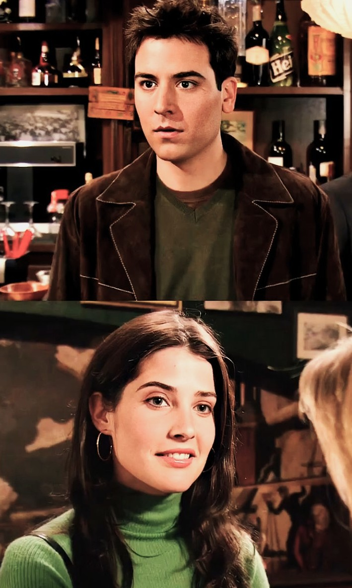
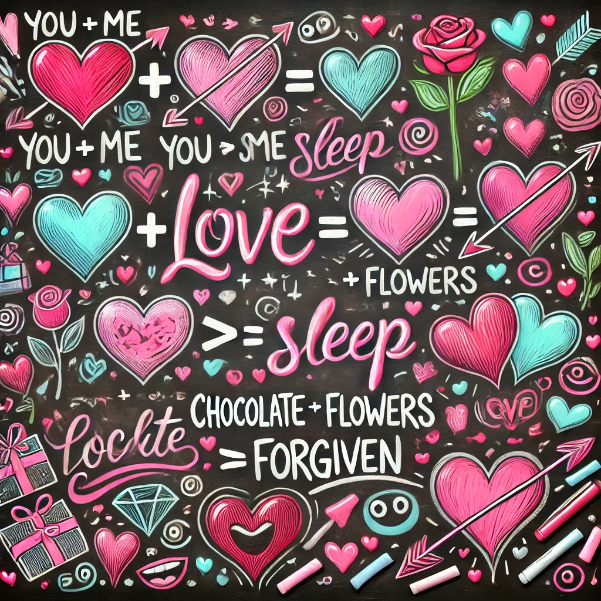
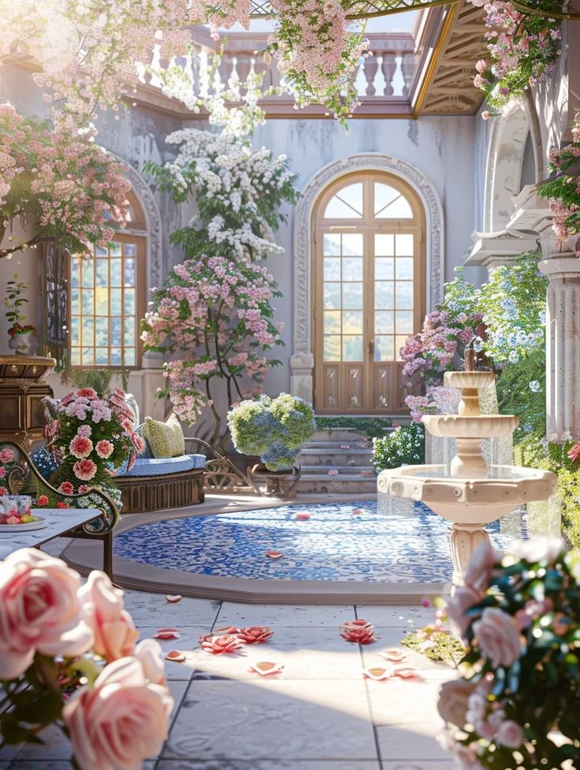
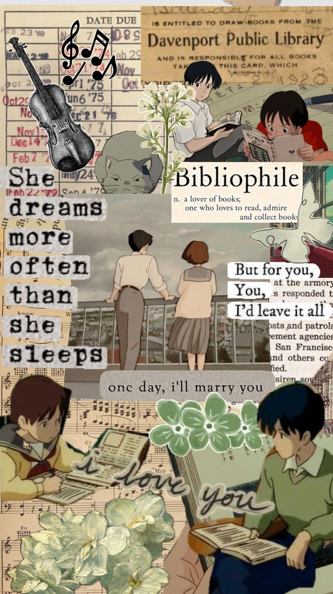
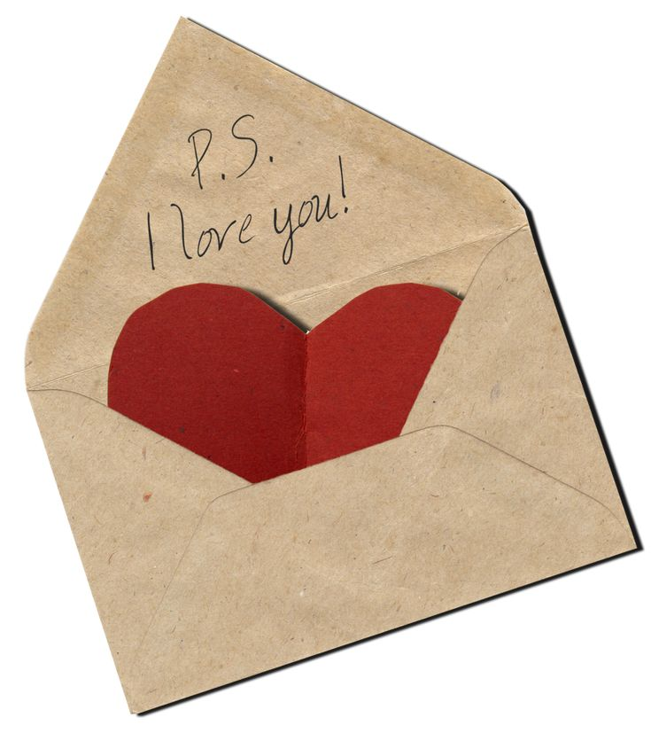

Welcome, My Fiona ❤️🥹
"In the words of Shrek, ‘I’m like an onion 🧅—I’ve got layers. And right now, every layer of me is saying I’m sorry 😣 and I love you 🥰.’"
<
The Day I First Saw You 😍
"From the moment I saw you, I just knew... you were going to be someone so important to me, someone I’d want by my side forever. 💕"
You’re the Smartest Decision I’ve Ever Made 🤓❤️
"Even Young Sheldon would agree—you're the best equation I’ll never stop solving! 🧮💕"
A Love Worth Fighting For ⚔️❤️
"If we were in *Bridgerton*, you’d be the diamond of the season 💎, and I’d fight for your heart. 🥰"
Even If The World Ends, I’ll Be With You 🌎❤️
"I may not always show it in the grandest ways, but in the quiet, imperfect moments, I think I’m falling in love with you all over again.💥"

Our Story is a Beautiful Song 🎶💕
"Like *Whisper of the Heart*, you inspire me to become better every day. ✨"
To The Girl I’ll Always Love ❤️✉️
"You know how they say love is like a letter you never send? Well, with you, I’ve sent every one of mine—each one written with my heart, and each one sealed with the truth that I’m falling for you, over and over again 💌"
